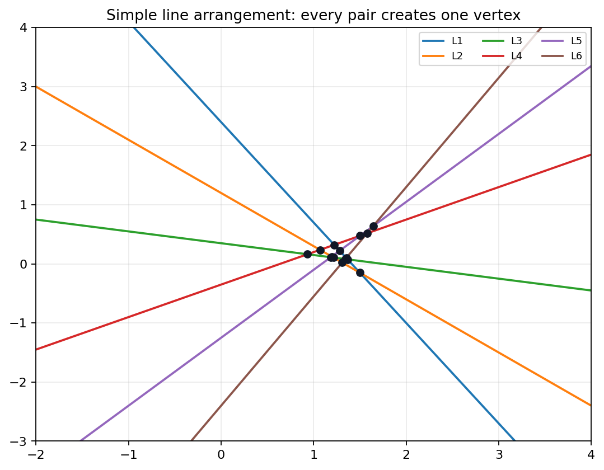
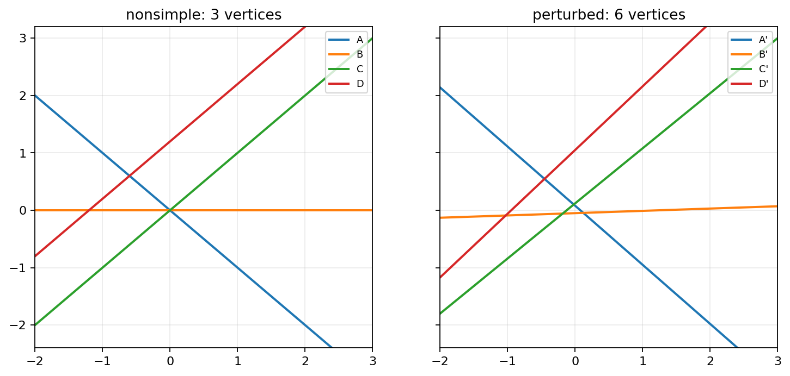
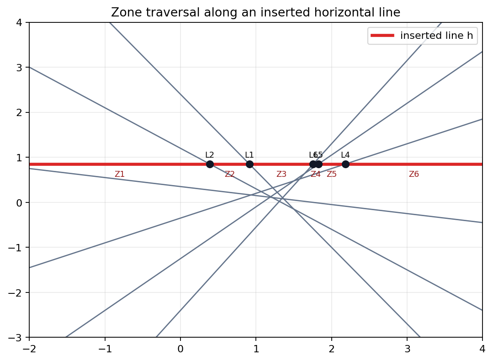
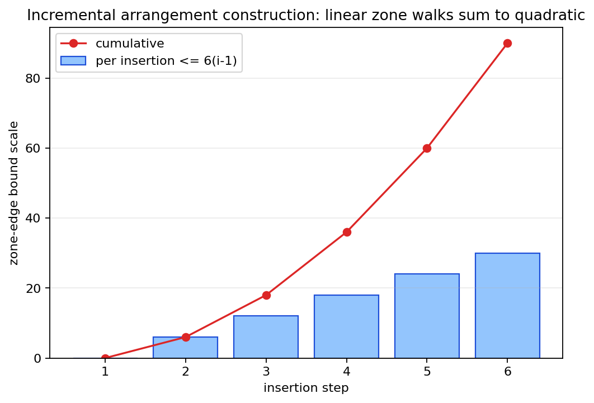
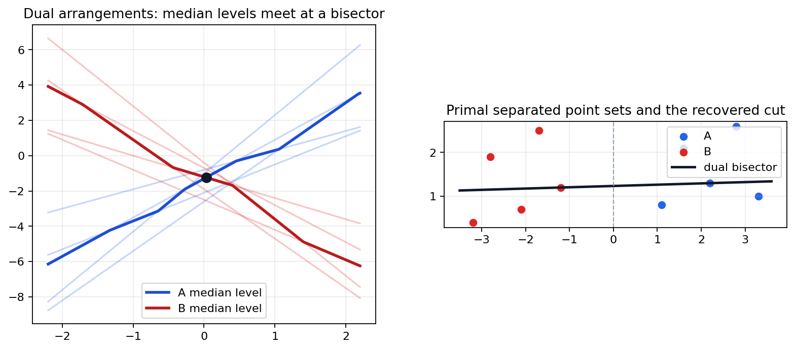
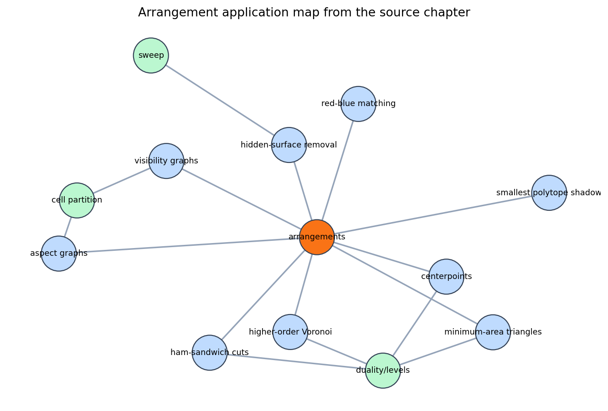

A line arrangement cuts space into searchable cells; the zone theorem makes incremental construction efficient, and duality turns point problems into level searches.
Use arrangements as the unifying data structure behind exact quadratic counts, incremental construction, higher-order Voronoi diagrams, and geometric optimization searches.
Checked artifacts verify simple counts, degeneracy effects, zone traversal, cumulative insertion cost, median levels, and the application map.

An arrangement of lines is the planar subdivision induced by all input lines: vertices at intersections, edges along line pieces, and faces between them.
Inside one cell, the sign pattern against every input line is fixed. A geometric query can often be reduced to locating the right cell or walking adjacent cells.
For n lines with no parallels and no triple intersections:
\(V=\binom n2,\quad E=n^2,\quad F=\binom n2+n+1.\)
| n | V | E | F |
|---|---|---|---|
| 6 | 15 | 36 | 22 |
Every pair contributes one vertex; each line is cut into n edges by its n-1 crossings.

Parallel lines remove an intersection. Triple intersections merge several pairwise events into one vertex.
The notebook example moves from 3 vertices to the simple maximum of 6 vertices for four lines.
Simple arrangements maximize the vertex, edge, and face ledger for line arrangements in the plane.

The zone of h is the set of arrangement cells crossed by h, together with the boundary edges of those cells.
| Inserted line | h: y = 0.85 |
|---|---|
| Cells crossed | 7 |
| Zone edge proxy | 19 |
| Theorem bound | 6n = 36 |
For n lines, the zone complexity of one line h is linear; the chapter's explicit statement uses \(Z_n < 6n\).
After k insertions, the subdivision is the arrangement of the first k lines, with cell adjacencies consistent along every edge.

\(\sum_{k=0}^{n-1} O(k)=O(n^2)\)
| Inserted line | Existing | Zone bound | Cumulative |
|---|---|---|---|
| 1 | 0 | 0 | 0 |
| 2 | 1 | 6 | 6 |
| 3 | 2 | 12 | 18 |
| 4 | 3 | 18 | 36 |
| 5 | 4 | 24 | 60 |
| 6 | 5 | 30 | 90 |
arrangement: \(O(n^d)\)
zone of one hyperplane: \(O(n^{d-1})\)
The full decomposition gets one power of n per dimension. A single inserted hyperplane sees one lower-dimensional arrangement.
\((a,b)\quad \longleftrightarrow \quad y=ax-b\)
Incidence is preserved, and above-below tests are converted into above-below tests with a sign convention.
Point-set questions become arrangement questions: search a level, find an intersection, or locate a cell.

The k-level consists of arrangement edges whose points have exactly k lines below them.
For an odd set of lines, the median level has the same number of lines above and below.
| Dual intersection | (0.0294, -1.2353) |
|---|---|
| Primal line | slope 0.0294, intercept 1.2353 |
A region whose points share the same set of k nearest sites.
Bisectors, envelopes, and levels encode where the ordering of distances changes.
Slope 0.0294 and intercept 1.2353 bisect both odd point sets in the checked example.

| Application | Arrangement Role |
|---|---|
| Visibility | partition sight lines |
| Hidden surfaces | sweep projected cells |
| Aspect graphs | partition view space |
| Centerpoints | search depth levels |
| Minimum triangles | dual nearest-line relation |
Build or reason about the partition once, then convert a geometric question into cell location, zone traversal, or level search.
Parallel lines, coincident lines, and triple intersections change vertex and edge counts. The algorithm needs a policy, not a hidden assumption.
Vertical lines and points at infinity need a projective or symbolic convention if the implementation must handle them uniformly.
Nearly equal intersections can flip order along a zone walk, so exact or certified predicates matter for robust subdivisions.
Using the simple formulas as runtime checks on nonsimple input without first perturbing or representing degeneracy.
State the input model, then make the subdivision data structure enforce that model.
For simple line arrangements, \(V=\binom n2\), \(E=n^2\), and \(F=\binom n2+n+1\).
The zone theorem makes each insertion linear in the number of existing lines, so total construction is quadratic.
Point problems become line arrangement level searches, including median-level ham-sandwich cuts and higher-order Voronoi structure.
Given five lines and one candidate insertion line h, mark the crossed cells, list the crossing order, estimate the zone boundary edges, and explain which dual level would encode a balanced point-set cut.